Windows 11
Комерційна

Особливості
- Сучасний дизайн з центрованим меню Пуск
- Підтримка віджетів
- Покращена підтримка для ігор
- Інтеграція з Microsoft 365
- Підвищені вимоги до системи
Системні вимоги
- Процесор: 1 ГГц або швидше з 2+ ядрами
- RAM: 4 ГБ
- Сховище: 64 ГБ або більше
- TPM 2.0
- DirectX 12 з WDDM 2.0
Windows 10
Комерційна
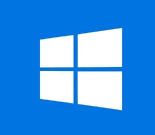
Особливості
- Класичний інтерфейс Windows
- Регулярні оновлення безпеки
- Підтримка DirectX 12
- Інтеграція з Microsoft Store
- Сумісність з більшістю програм
Системні вимоги
- Процесор: 1 ГГц
- RAM: 2 ГБ (32-bit) / 4 ГБ (64-bit)
- Сховище: 32 ГБ
- DirectX 9 з WDDM 1.0
Ціна: від 3000 грн
Купити
Windows 8.1
Комерційна
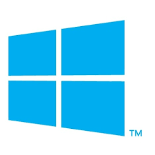
Особливості
- Плиточний інтерфейс Metro
- Покращена продуктивність
- Інтеграція з хмарними сервісами
- Підтримка сенсорного керування
Системні вимоги
- Процесор: 1 ГГц
- RAM: 1 ГБ (32-bit) / 2 ГБ (64-bit)
- Сховище: 16 ГБ (32-bit) / 20 ГБ (64-bit)
Застаріла версія
Windows 7
Комерційна (Застаріла)
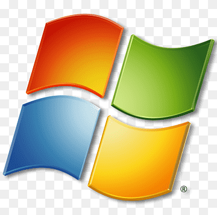
Особливості
- Класичний інтерфейс Windows
- Висока стабільність
- Широка сумісність з програмами
- Підтримка припинена
Системні вимоги
- Процесор: 1 ГГц
- RAM: 1 ГБ (32-bit) / 2 ГБ (64-bit)
- Сховище: 16 ГБ (32-bit) / 20 ГБ (64-bit)
Не підтримується
Windows XP
Комерційна (Застаріла)
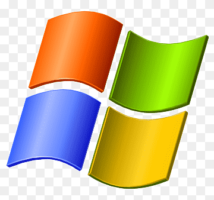
Особливості
- Легендарний інтерфейс
- Низькі системні вимоги
- Підтримка застарілого ПЗ
- Не рекомендується для сучасного використання
Системні вимоги
- Процесор: 233 МГц
- RAM: 64 МБ
- Сховище: 1.5 ГБ
Не підтримується
Windows Vista
Комерційна (Застаріла)
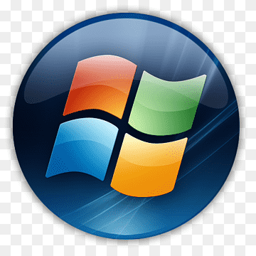
Особливості
- Aero інтерфейс
- UAC система безпеки
- Оновлений медіа-центр
- Підтримка припинена
Системні вимоги
- Процесор: 800 МГц
- RAM: 512 МБ
- Сховище: 15 ГБ
Не підтримується
macOS Ventura
Комерційна (для Mac)
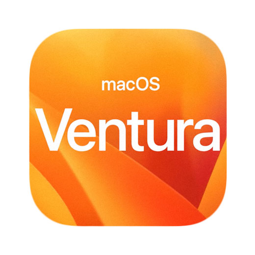
Особливості
- Елегантний та інтуїтивний інтерфейс
- Відмінна інтеграція з іншими пристроями Apple
- Висока безпека та конфіденційність
- Режим Stage Manager для організації вікон
- Безкоштовні оновлення
Системні вимоги
- Комп'ютер Mac не старше 2017 року
- 8 ГБ RAM рекомендовано
- Мінімум 25 ГБ вільного місця
Безкоштовно для власників Mac
Завантажити
macOS Monterey
Комерційна (для Mac)
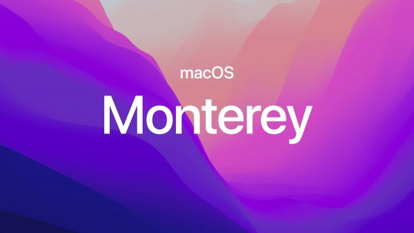
Особливості
- Universal Control
- Покращені функції FaceTime
- Режим фокусування
- Shortcuts для Mac
Системні вимоги
- Комп'ютер Mac не старше 2015 року
- 8 ГБ RAM рекомендовано
- Мінімум 26 ГБ вільного місця
Безкоштовно для власників Mac
Завантажити
macOS Big Sur
Комерційна (для Mac)
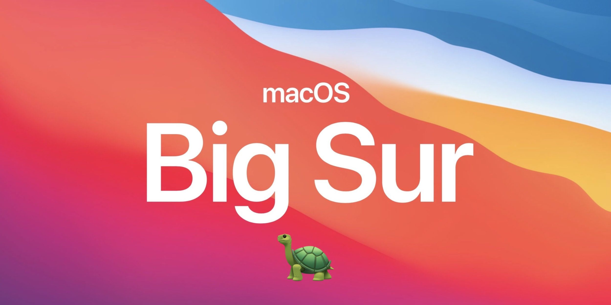
Особливості
- Оновлений дизайн інтерфейсу
- Центр керування
- Покращений Safari
- Підтримка процесорів M1
Системні вимоги
- Комп'ютер Mac не старше 2013 року
- 4 ГБ RAM мінімум
- Мінімум 35.5 ГБ вільного місця
Безкоштовно для власників Mac
Завантажити
Ubuntu 22.04 LTS
Безкоштовна (Open Source)
Особливості
- Безпечна та стабільна операційна система
- Підтримка протягом 5 років (LTS версія)
- Робочий стіл GNOME 42
- Великий вибір безкоштовного програмного забезпечення
- Низькі системні вимоги
Системні вимоги
- Процесор: 2 ГГц dual core
- RAM: 4 ГБ
- Сховище: 25 ГБ
- Графіка: 3D-прискорення
Безкоштовно
Завантажити
Fedora Workstation
Безкоштовна (Open Source)
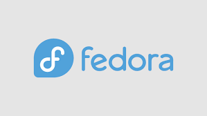
Особливості
- Найновіші технології Linux
- GNOME робочий стіл
- Відмінна підтримка розробників
- Регулярні оновлення
Системні вимоги
- Процесор: 2 ГГц dual core
- RAM: 4 ГБ
- Сховище: 20 ГБ
Безкоштовно
Завантажити
Arch Linux
Безкоштовна (Open Source)
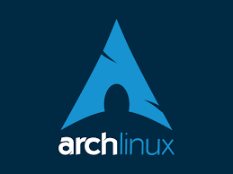
Особливості
- Мінімалістичний дизайн
- Rolling release модель
- Повний контроль над системою
- Велике спільнота користувачів
Системні вимоги
- Процесор: x86_64
- RAM: 512 МБ
- Сховище: 2 ГБ
Безкоштовно
Завантажити
Manjaro
Безкоштовна (Open Source)
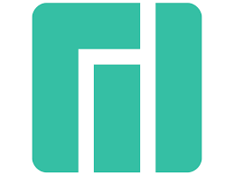
Особливості
- Базується на Arch Linux
- Простіша установка
- Вибір робочих столів
- Дружній до початківців
Системні вимоги
- Процесор: 1 ГГц
- RAM: 1 ГБ
- Сховище: 30 ГБ
Безкоштовно
Завантажити
Android 14
Безкоштовна
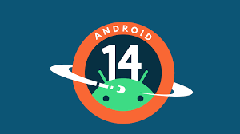
Особливості
- Покращена конфіденційність
- Оптимізація батареї
- Нові функції безпеки
- Підтримка новітніх технологій
Системні вимоги
- Залежить від пристрою
- Підтримка останніх смартфонів
Безкоштовно
Android 13
Безкоштовна
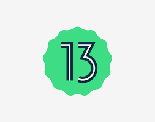
Особливості
- Матеріальний дизайн 3
- Покращені сповіщення
- Нові функції безпеки
- Оптимізація продуктивності
Системні вимоги
- Залежить від пристрою
- Підтримка більшості сучасних смартфонів
Безкоштовно
Windows Server 2022
Комерційна
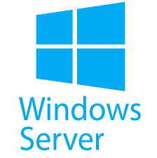
Особливості
- Покращені функції безпеки
- Підтримка хмарних технологій Azure
- Вдосконалені віртуалізація та контейнеризація
- Оптимізована продуктивність для серверних навантажень
- Інтегровані служби Active Directory
Системні вимоги
- Процесор: 1.4 ГГц 64-bit
- RAM: 512 МБ (мінімум), 2 ГБ (рекомендовано)
- Сховище: 32 ГБ
Ціна: від 20000 грн
Купити
Ubuntu Server
Безкоштовна (Open Source)
Особливості
- Стабільність та надійність
- Підтримка контейнерів
- Інтеграція з хмарними сервісами
- Регулярні оновлення безпеки
Системні вимоги
- Процесор: 1 ГГц
- RAM: 512 МБ
- Сховище: 2.5 ГБ
Безкоштовно
Завантажити
Red Hat Enterprise Linux
Комерційна
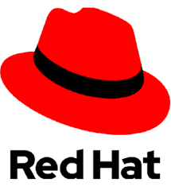
Особливості
- Корпоративного рівня підтримка
- Висока безпека та стабільність
- Сертифікована сумісність
- Розширена підтримка контейнерів
Системні вимоги
- Процесор: 1 ГГц
- RAM: 1 ГБ
- Сховище: 10 ГБ